Introduction
When comparing functional data, observed curves often exhibit both amplitude variability (differences in height/shape) and phase variability (differences in timing/speed). Standard methods like the cross-sectional mean or PCA treat all variation as amplitude, which can produce blurred averages and inflated variance.
Elastic alignment separates these two sources of variability by finding optimal warping functions that retime each curve before comparison. The mathematical framework uses the Square-Root Slope Function (SRSF) representation, which makes the Fisher-Rao metric equivalent to the metric – enabling efficient dynamic programming alignment.
Quick Start
set.seed(42)
argvals <- seq(0, 1, length.out = 100)
# Simulate curves with horizontal shifts
n <- 15
shifts <- runif(n, -0.1, 0.1)
data <- matrix(0, n, 100)
for (i in 1:n) {
data[i, ] <- sin(2 * pi * (argvals - shifts[i]))
}
fd <- fdata(data, argvals = argvals)
# Align to cross-sectional mean (default)
res <- elastic.align(fd)
print(res)
#> Elastic Alignment
#> Curves: 15 x 100 grid points
#> Mean elastic distance: 0.2018
plot(res, type = "both")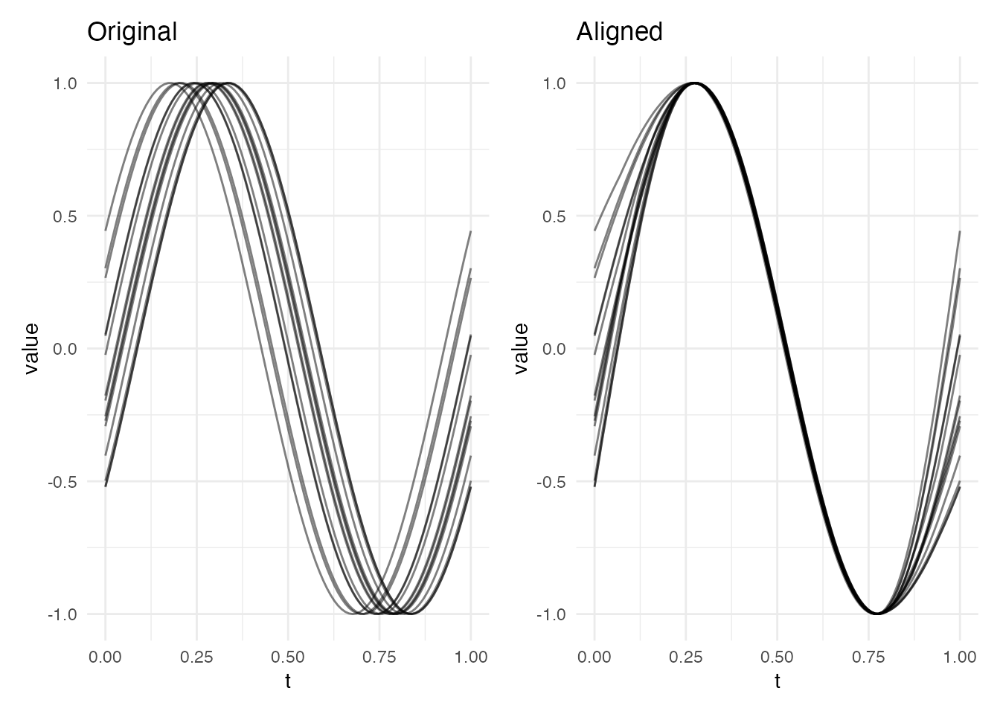
You can also supply a custom target – as a numeric vector or an
fdata object:
# Use the deepest (most central) curve as target
depths <- depth(fd, method = "FM")
res_deep <- elastic.align(fd, target = fd[which.max(depths)])Inspecting Warping Functions
The warping functions show how each curve’s time axis is stretched or compressed to match the target:
plot(res, type = "warps")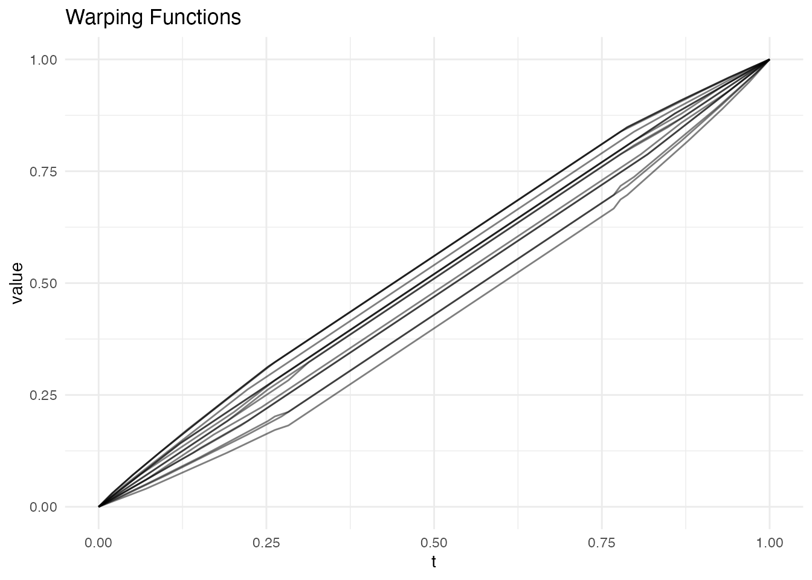
A warping function above the diagonal means that part of the curve has been sped up (compressed in time); below the diagonal means slowed down (stretched).
How It Works (Intuition)
Imagine you record the heartbeat signal of several patients. Each heartbeat has the same features – a P wave, a QRS complex, a T wave – but the timing differs from patient to patient. If you simply average the raw signals, the peaks blur out because they don’t line up.
Elastic alignment fixes this by stretching and compressing the time axis of each curve until corresponding features line up. The key insight is to work with the Square-Root Slope Function (SRSF) – a transformed version of the curve that makes the math tractable. In SRSF space, finding the best alignment reduces to a standard dynamic programming problem that can be solved efficiently.
After alignment, variability splits cleanly into two parts:
- Amplitude variability: genuine differences in curve shape (how tall the peaks are, how deep the valleys)
- Phase variability: differences in timing (when the peaks occur)
The Karcher mean is the average curve shape, computed after alignment. Unlike the ordinary mean, it preserves sharp features because the peaks are aligned before averaging.
Mathematical Framework
The Space of Warping Functions
Let denote the space of absolutely continuous functions . The warping group is the set of orientation-preserving diffeomorphisms of :
acts on by composition: for and , the warped function is . This group action reparameterizes the curve without changing its shape – only the speed at which the curve is traversed changes.
The Fisher-Rao Metric
The Fisher-Rao metric on is the unique Riemannian metric (up to scaling) that is invariant under the action of . For two tangent vectors , it is defined as:
This metric is difficult to compute directly because it depends on the derivative of in the denominator. The SRSF transform resolves this by isometrically mapping the Fisher-Rao geometry to a flat space.
SRSF Transform
The Square-Root Slope Function of is defined as:
This transform has three key properties:
- Isometry: The Fisher-Rao distance between and equals the distance between their SRSFs and (after optimal alignment)
- Equivariance: Under the warping action , the SRSF transforms as . This is simply the standard action of on
- Invertibility: Given and an initial value , the original function is recovered by:
q <- srsf.transform(fd)
p1 <- plot(fd) + labs(title = "Original Curves")
p2 <- plot(q) + labs(title = "SRSF Representation")
p1 + p2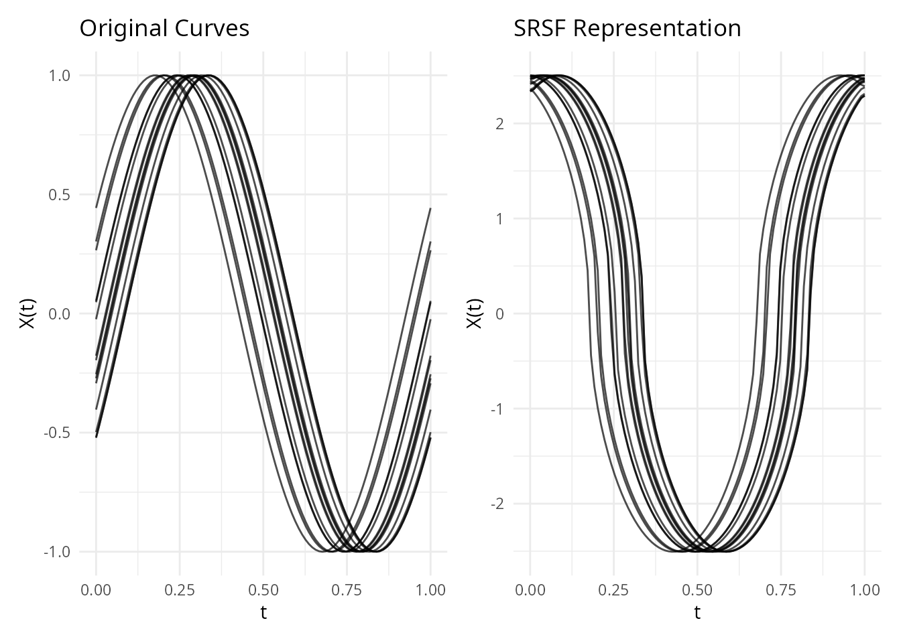
f_original <- fd$data[1, ]
q_values <- q$data[1, ]
f_reconstructed <- srsf.inverse(q_values, argvals, f_original[1])
max_error <- max(abs(f_original - f_reconstructed))
cat("Round-trip max error:", format(max_error, digits = 4), "\n")
#> Round-trip max error: 0.001007Alignment as Optimization
Given two functions with SRSFs , the optimal alignment finds:
This is solved via dynamic programming in time, where is the number of grid points. The aligned function is , and the elastic distance between and is:
This distance satisfies all metric axioms (non-negativity, symmetry, triangle inequality) and is invariant to reparameterization: for any .
Amplitude-Phase Decomposition
Elastic alignment provides a principled decomposition of total variability. For a sample with aligned versions :
- Amplitude variability: The residual variance in after alignment. This captures genuine differences in curve shape (height, depth of features)
- Phase variability: The variability in the warping functions themselves. This captures differences in timing (when features occur)
The variance reduction (VR) quantifies the proportion of total variance attributable to phase:
where denotes the mean pointwise variance . A VR close to 1 indicates that most variability was phase (and has been removed); a VR near 0 indicates the variability is primarily amplitude.
Karcher Mean
The Karcher mean (Frechet mean in the elastic metric) is the function that minimizes the sum of squared elastic distances:
Since accounts for reparameterization, is a shape-preserving average: it recovers the common shape without blurring from phase variability. The algorithm iterates:
- Initialize (cross-sectional mean)
- Align all curves to :
- Update
- Repeat until convergence ()
In practice, convergence is guaranteed to a local minimum and typically occurs in 5–20 iterations.
Core Functions
Karcher Mean
km <- karcher.mean(fd, max.iter = 20, tol = 1e-4)
print(km)
#> Karcher Mean (Elastic)
#> Curves: 15 x 100 grid points
#> Iterations: 2
#> Converged: TRUE
cross_mean <- colMeans(fd$data)
karcher <- as.numeric(km$mean$data)
df_means <- data.frame(
t = rep(argvals, 2),
value = c(cross_mean, karcher),
type = rep(c("Cross-sectional mean", "Karcher mean"), each = 100)
)
ggplot(df_means, aes(x = t, y = value, color = type)) +
geom_line(linewidth = 1.2) +
scale_color_manual(values = c("Cross-sectional mean" = "steelblue",
"Karcher mean" = "firebrick")) +
labs(title = "Cross-Sectional vs Karcher Mean",
x = "t", y = "f(t)", color = NULL)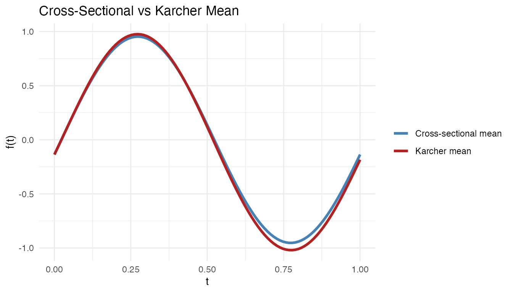
The cross-sectional mean is attenuated by the phase shifts, while the Karcher mean recovers the true amplitude.
For complex data, increase max.iter and check
convergence:
set.seed(42)
n <- 20
dm <- matrix(0, n, 100)
for (i in 1:n) {
shift <- runif(1, -0.1, 0.1)
dm[i, ] <- exp(-25 * (argvals - 0.5 - shift)^2)
}
fd_bumps <- fdata(dm, argvals = argvals)
km <- karcher.mean(fd_bumps, max.iter = 30, tol = 1e-4)
cat("Converged:", km$converged, "\n")
#> Converged: TRUE
cat("Iterations:", km$n.iter, "\n")
#> Iterations: 2
plot(km, type = "mean")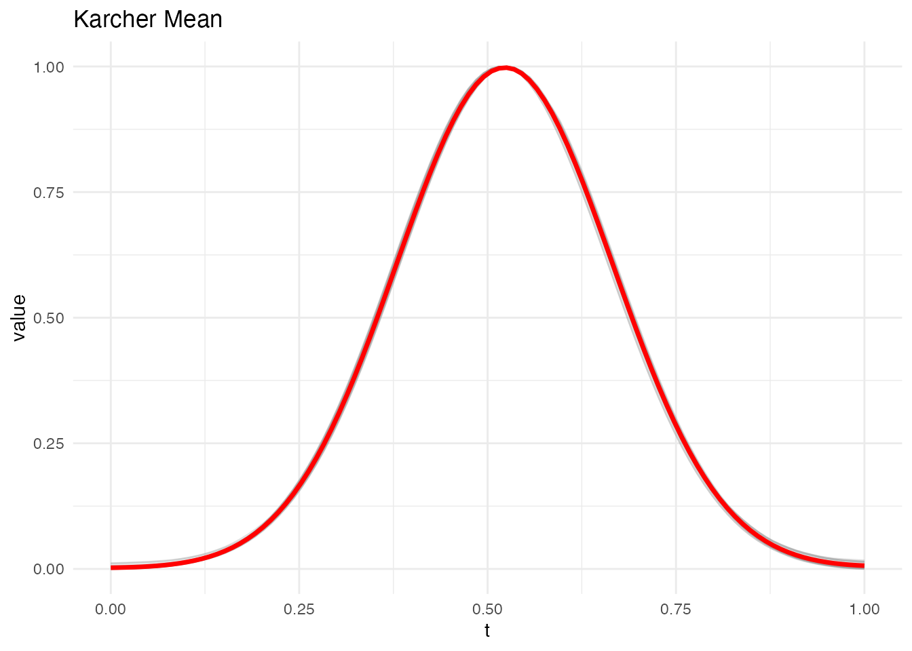
Elastic Distance Matrix
The elastic distance provides a reparameterization-invariant metric for clustering, MDS, and other distance-based methods:
D <- elastic.distance(fd)
# Metric properties
cat("Symmetric: ", max(abs(D - t(D))) < 1e-10, "\n")
#> Symmetric: TRUE
cat("Non-negative: ", all(D >= -1e-10), "\n")
#> Non-negative: TRUE
cat("Zero diagonal: ", all(abs(diag(D)) < 1e-10), "\n")
#> Zero diagonal: TRUE
mds <- cmdscale(D, k = 2)
plot(mds, pch = 19, xlab = "MDS 1", ylab = "MDS 2",
main = "MDS of Elastic Distances", col = "steelblue", cex = 1.3)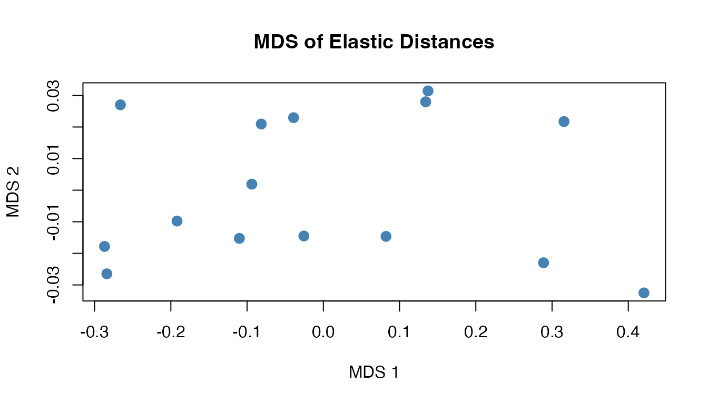
The elastic distance is also available through the
metric() dispatcher:
Amplitude and Phase Distances
The elastic framework uniquely decomposes the total distance between two curves into amplitude (shape) and phase (timing) components:
D_amp <- amplitude.distance(fd, lambda = 0)
D_phase <- phase.distance(fd, lambda = 0)
cat("Amplitude distance (curves 1-2):", round(as.matrix(D_amp)[1, 2], 3), "\n")
#> Amplitude distance (curves 1-2): 0.06
cat("Phase distance (curves 1-2): ", round(as.matrix(D_phase)[1, 2], 3), "\n")
#> Phase distance (curves 1-2): 0.041
cat("Elastic distance (curves 1-2): ", round(D[1, 2], 3), "\n")
#> Elastic distance (curves 1-2): 0.06For these phase-shifted sine curves, most of the distance comes from phase (timing differences), with very little amplitude distance (the shapes are similar after alignment).
Alignment Quality Diagnostics
After alignment, alignment.quality() provides a
comprehensive set of diagnostics quantifying how well the alignment
worked. It requires a Karcher mean result:
km_diag <- karcher.mean(fd, max.iter = 20, tol = 1e-4)
aq <- alignment.quality(fd, km_diag)
print(aq)
#> Alignment Quality Diagnostics
#> Mean warp complexity: 0.0668
#> Mean warp smoothness: 13.121
#> Total variance: 0.0457
#> Amplitude variance: 0.0106
#> Phase variance: 0.0351
#> Phase/Total ratio: 0.7687
#> Mean VR: 0.1508The key quantities:
- Variance reduction: fraction of total pointwise variance removed by alignment
- Phase-amplitude ratio: how much of the total variability was due to phase
- Warp complexity: average deviation of warping functions from the identity (higher = more warping needed)
- Warp smoothness: measures the regularity of the warping functions
plot(aq, type = "variance")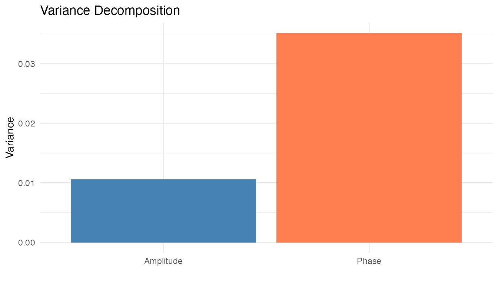
The variance plot shows the pointwise variance before and after alignment. Regions where alignment reduces variance most correspond to features with the greatest timing differences.
Pairwise Consistency
The alignment.pairwise.consistency() function checks
whether pairwise alignments are consistent – i.e., whether aligning A to
C directly gives the same result as aligning A to B then B to C. A value
near 1 indicates high consistency:
pc <- alignment.pairwise.consistency(fd, lambda = 0, max.triplets = 100)
cat("Pairwise consistency:", round(pc, 3), "\n")
#> Pairwise consistency: 0.004Low consistency can indicate that the data contains subgroups with different shapes, or that the alignment is sensitive to the choice of target.
Amplitude-Phase Decomposition
For individual curve pairs, elastic.decomposition()
provides the full decomposition of the elastic distance into amplitude
and phase components:
f1 <- fd[1]
f2 <- fd[5]
decomp <- elastic.decomposition(f1, f2, lambda = 0)
cat("Amplitude distance:", round(decomp$d_amplitude, 4), "\n")
#> Amplitude distance: 0.2482
cat("Phase distance: ", round(decomp$d_phase, 4), "\n")
#> Phase distance: 0.0786
# Visualize the aligned pair
f1_data <- as.numeric(f1$data)
f2_aligned <- decomp$f_aligned
df_pair <- data.frame(
t = rep(argvals, 2),
value = c(f1_data, f2_aligned),
curve = rep(c("f1 (target)", "f2 (aligned)"), each = length(argvals))
)
ggplot(df_pair, aes(x = t, y = value, color = curve)) +
geom_line(linewidth = 1) +
scale_color_manual(values = c("f1 (target)" = "steelblue", "f2 (aligned)" = "firebrick")) +
labs(title = sprintf("Amplitude dist = %.3f, Phase dist = %.3f",
decomp$d_amplitude, decomp$d_phase),
x = "t", y = "f(t)", color = NULL)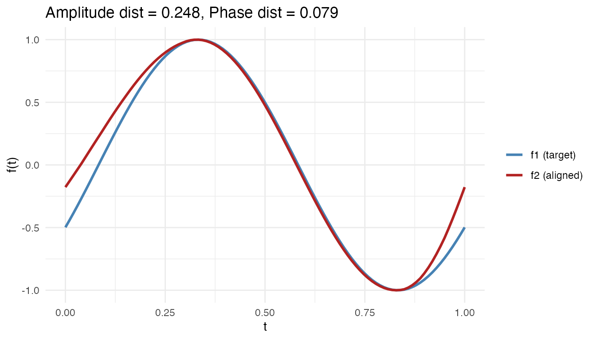
This decomposition is useful for understanding why two curves differ: is it because they have different shapes (amplitude) or different timing (phase)?
Constrained Alignment
When curves have identifiable features (peaks, valleys), you can constrain the elastic alignment to pass through specific landmark positions. This combines the smoothness of elastic warping with guaranteed feature correspondence:
# Detect peaks and constrain alignment to pass through them
ec <- elastic.align.constrained(fd, kind = "peak", min.prominence = 0.3,
expected.count = 1)
p1 <- plot(res, type = "warps") + labs(title = "Elastic Warps")
p2 <- plot(ec, type = "warps") + labs(title = "Constrained Warps")
p1 + p2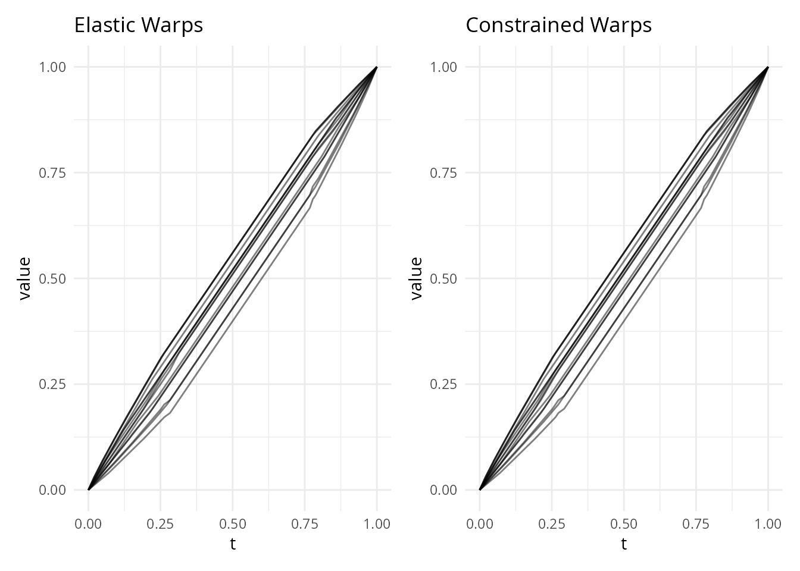
The constrained warps are smooth between landmarks (like elastic) but
anchored at the peak positions (like landmark registration). For a
detailed comparison of all alignment methods, see
vignette("alignment-comparison", package = "fdars").
When to Use Elastic Alignment
Elastic alignment works best when curves share the same shape but differ in timing. The table below summarizes where it excels and where it does not.
Works Well
| Scenario | Typical VR | Notes |
|---|---|---|
| Shifted peaks / bumps | 98-100% | Best case: localized features with horizontal shifts |
| ECG-like sharp peaks | 98-100% | Localized timing differences in multi-peak curves |
| Spectral data (shifted peaks) | 95-98% | Multiple peaks with coherent timing shifts |
| Phase-shifted smooth curves | 90-93% | Sinusoidal, polynomial, sigmoid curves with shifts |
| Non-periodic curves | 95-100% | Works well when boundary values are similar |
Where It Degrades
| Scenario | Typical VR | Explanation |
|---|---|---|
| Mixed amplitude + phase | 40-65% | Phase correction is partial when amplitude dominates |
| Noisy data (raw) | 0-30% | Noise in derivatives overwhelms SRSF; smooth first |
| Large boundary mismatch | 70-85% | Fixed boundary (, ) can’t correct endpoint values |
| Coarse grids (m < 50) | 70-75% | DP resolution limits alignment accuracy |
Where It Should NOT Be Used
| Scenario | What happens | Recommendation |
|---|---|---|
| Pure amplitude differences | Identity warp (no harm, no help) | Use standard methods |
| Rate-varying monotone curves | Spurious warping, VR < 0 | These are amplitude/shape differences, not phase |
| Genuinely different shapes | Forced warping, VR < 0 | Use depth or distance methods instead |
| Very noisy data (unsmoothed) | Noise-driven warping, VR < 0 | Pre-smooth with fdata2basis() +
basis2fdata()
|
Scenario Gallery
The following examples illustrate alignment behavior across different data scenarios. Each shows the original curves (left) and aligned curves (right) with variance reduction (VR) reported.
ECG-like Multi-Peak Curves
Sharp, localized features with timing differences are the ideal use case:
set.seed(42)
n <- 20
dm <- matrix(0, n, 100)
for (i in 1:n) {
shift <- runif(1, -0.05, 0.05)
t_shifted <- argvals - shift
# P wave, QRS complex, T wave
dm[i, ] <- 0.2 * exp(-200 * (t_shifted - 0.2)^2) -
0.6 * exp(-500 * (t_shifted - 0.4)^2) +
1.0 * exp(-800 * (t_shifted - 0.43)^2) -
0.2 * exp(-500 * (t_shifted - 0.46)^2) +
0.3 * exp(-150 * (t_shifted - 0.65)^2)
}
fd_ecg <- fdata(dm, argvals = argvals)
res_ecg <- elastic.align(fd_ecg)
vr <- 1 - mean(apply(res_ecg$aligned$data, 2, var)) /
mean(apply(fd_ecg$data, 2, var))
cat("ECG alignment VR:", round(vr * 100, 1), "%\n")
#> ECG alignment VR: 99.5 %
plot(res_ecg, type = "both")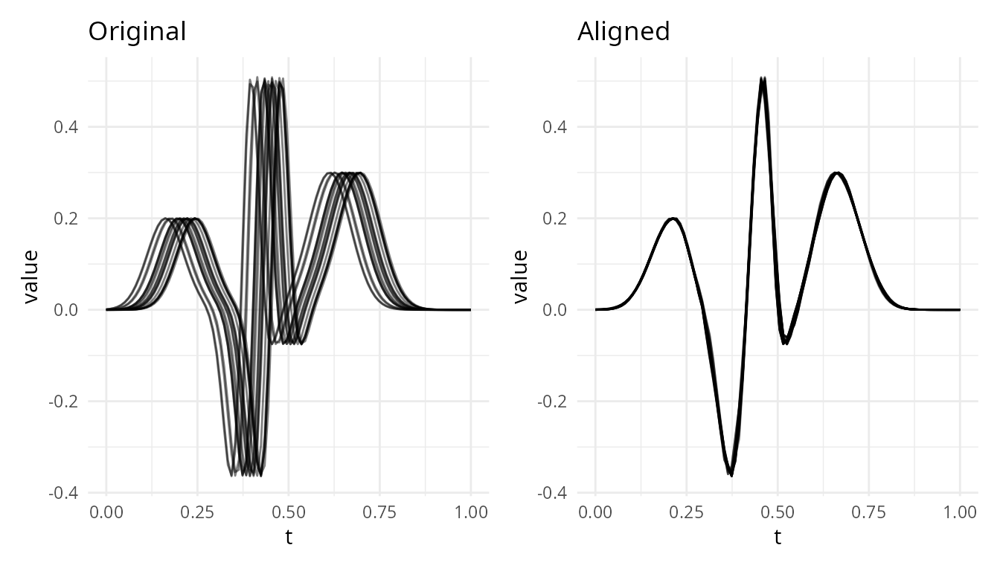
Spectral Peaks
Multiple peaks at varying positions, common in spectroscopy and chromatography:
set.seed(42)
n <- 20
dm <- matrix(0, n, 100)
for (i in 1:n) {
shift <- runif(1, -0.04, 0.04)
dm[i, ] <- 0.8 * exp(-300 * (argvals - 0.25 - shift)^2) +
1.0 * exp(-500 * (argvals - 0.50 - shift * 1.2)^2) +
0.5 * exp(-300 * (argvals - 0.75 - shift * 0.8)^2)
}
fd_spec <- fdata(dm, argvals = argvals)
res_spec <- elastic.align(fd_spec)
vr <- 1 - mean(apply(res_spec$aligned$data, 2, var)) /
mean(apply(fd_spec$data, 2, var))
cat("Spectral alignment VR:", round(vr * 100, 1), "%\n")
#> Spectral alignment VR: 99.4 %
plot(res_spec, type = "both")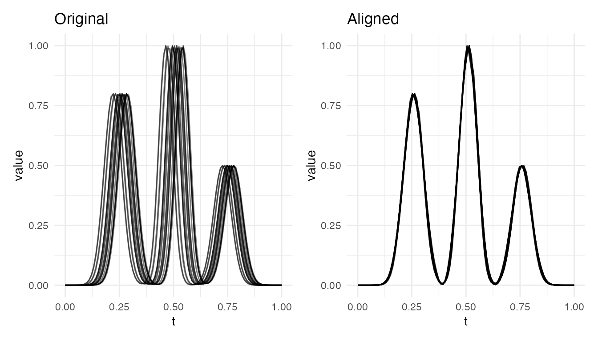
Growth-like Sigmoid Curves
Monotone S-shaped curves with timing shifts (e.g., growth curves with differing onset times):
set.seed(42)
n <- 20
dm <- matrix(0, n, 100)
for (i in 1:n) {
shift <- runif(1, -0.1, 0.1)
dm[i, ] <- 1 / (1 + exp(-20 * (argvals - 0.5 - shift)))
}
fd_sig <- fdata(dm, argvals = argvals)
res_sig <- elastic.align(fd_sig)
vr <- 1 - mean(apply(res_sig$aligned$data, 2, var)) /
mean(apply(fd_sig$data, 2, var))
cat("Sigmoid alignment VR:", round(vr * 100, 1), "%\n")
#> Sigmoid alignment VR: 100 %
plot(res_sig, type = "both")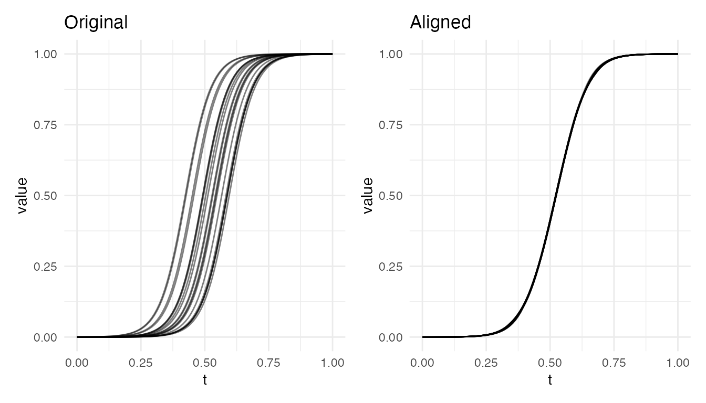
Mixed Amplitude and Phase Variability
When curves differ in both height and timing, alignment corrects the phase component but leaves amplitude variability untouched:
set.seed(42)
n <- 20
dm <- matrix(0, n, 100)
for (i in 1:n) {
amp <- runif(1, 0.5, 1.5)
shift <- runif(1, -0.1, 0.1)
dm[i, ] <- amp * sin(2 * pi * (argvals - shift))
}
fd_mix <- fdata(dm, argvals = argvals)
res_mix <- elastic.align(fd_mix)
vr <- 1 - mean(apply(res_mix$aligned$data, 2, var)) /
mean(apply(fd_mix$data, 2, var))
cat("Mixed amplitude+phase VR:", round(vr * 100, 1), "%\n")
#> Mixed amplitude+phase VR: 44.4 %
plot(res_mix, type = "both")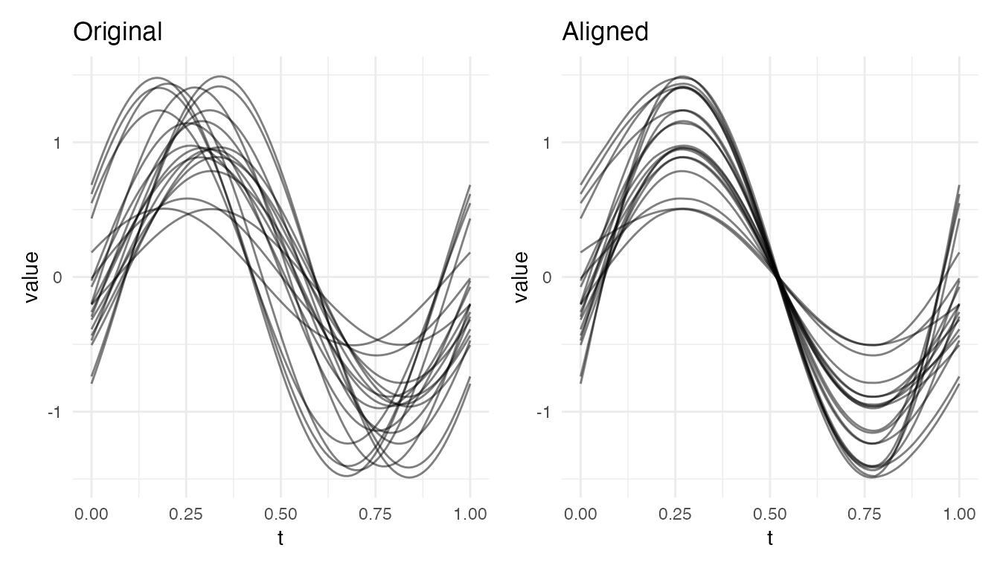
After alignment, curves still differ in amplitude (vertical spread) but peaks and valleys are now synchronized. The residual variance is real amplitude variability, not a failure of alignment.
Noisy Data: Raw vs Smoothed
Noise in derivatives overwhelms the SRSF. Pre-smoothing recovers alignment:
set.seed(42)
n <- 20
dm_clean <- matrix(0, n, 100)
shifts <- runif(n, -0.1, 0.1)
for (i in 1:n) dm_clean[i, ] <- sin(2 * pi * (argvals - shifts[i]))
dm_noisy <- dm_clean + matrix(rnorm(n * 100, sd = 0.3), n, 100)
fd_noisy <- fdata(dm_noisy, argvals = argvals)
# Align raw noisy data
res_noisy <- elastic.align(fd_noisy)
vr_raw <- 1 - mean(apply(res_noisy$aligned$data, 2, var)) /
mean(apply(fd_noisy$data, 2, var))
# Smooth first, then align
coefs <- fdata2basis(fd_noisy, nbasis = 15, type = "bspline")
fd_sm <- basis2fdata(coefs, argvals)
res_sm <- elastic.align(fd_sm)
vr_sm <- 1 - mean(apply(res_sm$aligned$data, 2, var)) /
mean(apply(fd_sm$data, 2, var))
cat("Raw VR: ", round(vr_raw * 100, 1), "%\n")
#> Raw VR: 22.3 %
cat("Smoothed VR:", round(vr_sm * 100, 1), "%\n")
#> Smoothed VR: 66.3 %
plot(res_noisy, type = "both")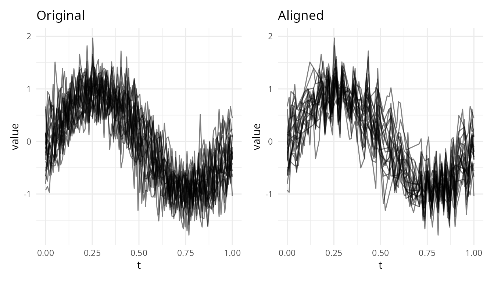
plot(res_sm, type = "both")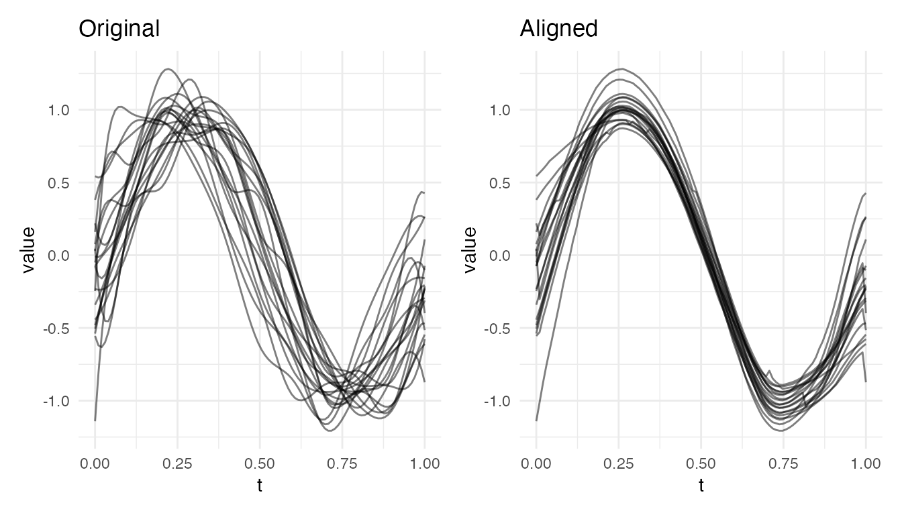
Boundary Mismatch
When shifted curves have different values at the domain boundaries, alignment is excellent in the interior but constrained at the edges:
set.seed(42)
n <- 15
dm <- matrix(0, n, 100)
shifts <- runif(n, -0.15, 0.15)
for (i in 1:n) dm[i, ] <- sin(2 * pi * (argvals - shifts[i]))
fd_bnd <- fdata(dm, argvals = argvals)
res_bnd <- elastic.align(fd_bnd)
vr <- 1 - mean(apply(res_bnd$aligned$data, 2, var)) /
mean(apply(fd_bnd$data, 2, var))
cat("Boundary mismatch VR:", round(vr * 100, 1), "% — note residual spread at boundaries\n")
#> Boundary mismatch VR: 77 % — note residual spread at boundaries
plot(res_bnd, type = "both")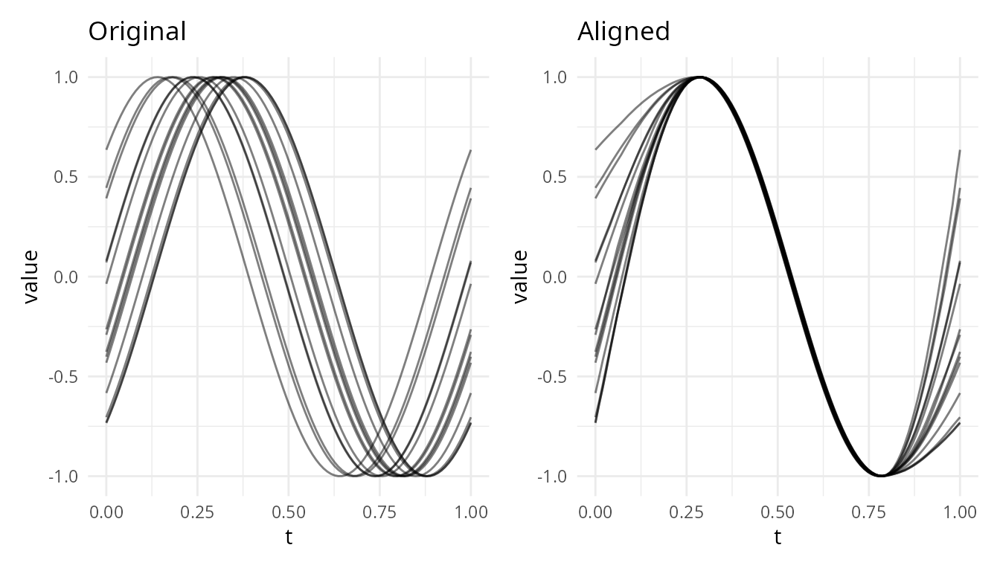
Pure Amplitude Differences
When curves differ only in height (no phase variability), alignment correctly produces identity warps – no benefit, but no harm:
set.seed(42)
n <- 15
dm <- matrix(0, n, 100)
for (i in 1:n) {
amp <- runif(1, 0.5, 2.0)
dm[i, ] <- amp * sin(2 * pi * argvals)
}
fd_amp <- fdata(dm, argvals = argvals)
res_amp <- elastic.align(fd_amp)
vr <- 1 - mean(apply(res_amp$aligned$data, 2, var)) /
mean(apply(fd_amp$data, 2, var))
cat("Pure amplitude VR:", round(vr * 100, 1), "% — identity warps applied\n")
#> Pure amplitude VR: 0 % — identity warps applied
plot(res_amp, type = "both")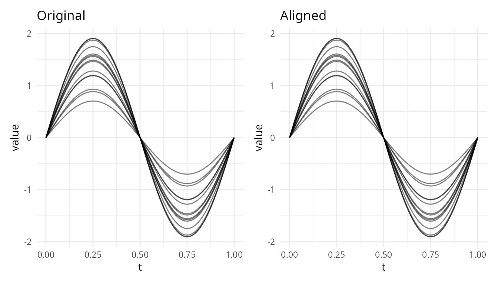
Genuinely Different Shapes
Alignment should not be used when curves have fundamentally different shapes. Forced warping produces meaningless results:
set.seed(42)
n <- 15
dm <- matrix(0, n, 100)
for (i in 1:n) {
if (i %% 5 == 1) dm[i, ] <- sin(2 * pi * argvals)
else if (i %% 5 == 2) dm[i, ] <- cos(6 * pi * argvals)
else if (i %% 5 == 3) dm[i, ] <- argvals^3
else if (i %% 5 == 4) dm[i, ] <- sin(10 * pi * argvals) * exp(-3 * argvals)
else dm[i, ] <- dnorm(argvals, 0.5, 0.05) / dnorm(0.5, 0.5, 0.05)
}
fd_diff <- fdata(dm, argvals = argvals)
res_diff <- elastic.align(fd_diff)
vr <- 1 - mean(apply(res_diff$aligned$data, 2, var)) /
mean(apply(fd_diff$data, 2, var))
cat("Different shapes VR:", round(vr * 100, 1), "% — forced warping of unrelated shapes\n")
#> Different shapes VR: 40.7 % — forced warping of unrelated shapes
plot(res_diff, type = "both")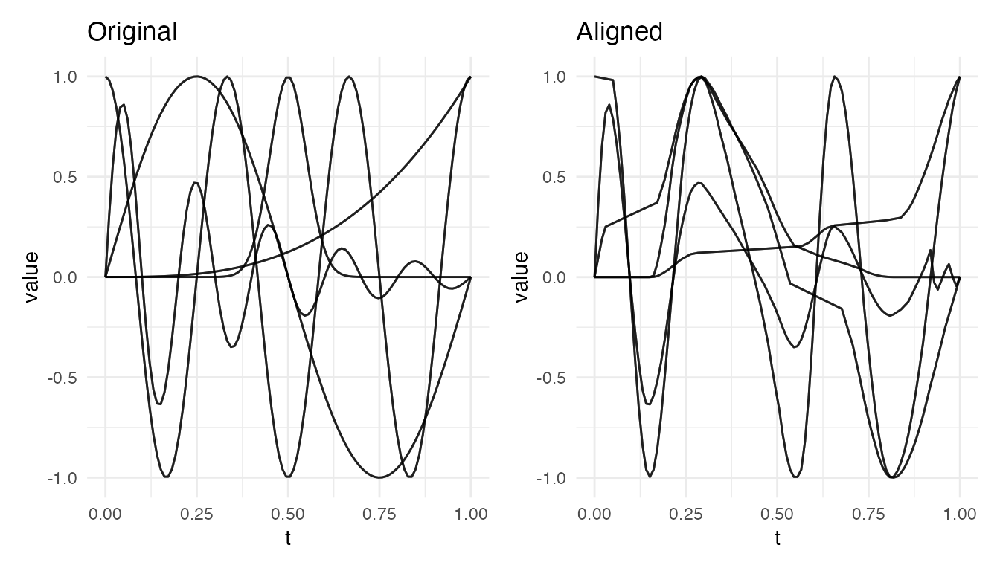
When VR is very low or negative, it indicates the data is not suitable for elastic alignment. Use depth or distance methods instead.
Multi-Bump Scaling
Real-world functional data often contains multiple peaks or features that vary independently. This section explores how elastic alignment handles curves with varying inter-bump distance (peaks shift independently) and varying bump width (peaks broaden or narrow) as the number of bumps increases.
Two Bumps
With two bumps, the warping function has enough freedom to independently adjust each peak’s position and width:
set.seed(42)
m <- 200
argvals_mb <- seq(0, 1, length.out = m)
n <- 20
# Varying inter-bump distance
data_pos <- matrix(0, n, m)
for (i in 1:n) {
p1 <- 0.3
p2 <- 0.7 + runif(1, -0.12, 0.12)
data_pos[i, ] <- exp(-300 * (argvals_mb - p1)^2) +
exp(-300 * (argvals_mb - p2)^2)
}
fd_pos <- fdata(data_pos, argvals = argvals_mb)
res_pos <- elastic.align(fd_pos)
vr_pos <- 1 - mean(apply(res_pos$aligned$data, 2, var)) /
mean(apply(fd_pos$data, 2, var))
# Varying bump width
data_w <- matrix(0, n, m)
for (i in 1:n) {
w1 <- runif(1, 200, 500)
w2 <- runif(1, 200, 500)
data_w[i, ] <- exp(-w1 * (argvals_mb - 0.3)^2) +
exp(-w2 * (argvals_mb - 0.7)^2)
}
fd_w <- fdata(data_w, argvals = argvals_mb)
res_w <- elastic.align(fd_w)
vr_w <- 1 - mean(apply(res_w$aligned$data, 2, var)) /
mean(apply(fd_w$data, 2, var))
cat("2 bumps — varying position: VR =", round(vr_pos * 100, 1), "%\n")
#> 2 bumps — varying position: VR = 100 %
cat("2 bumps — varying width: VR =", round(vr_w * 100, 1), "%\n")
#> 2 bumps — varying width: VR = 98.2 %
plot(res_pos, type = "both")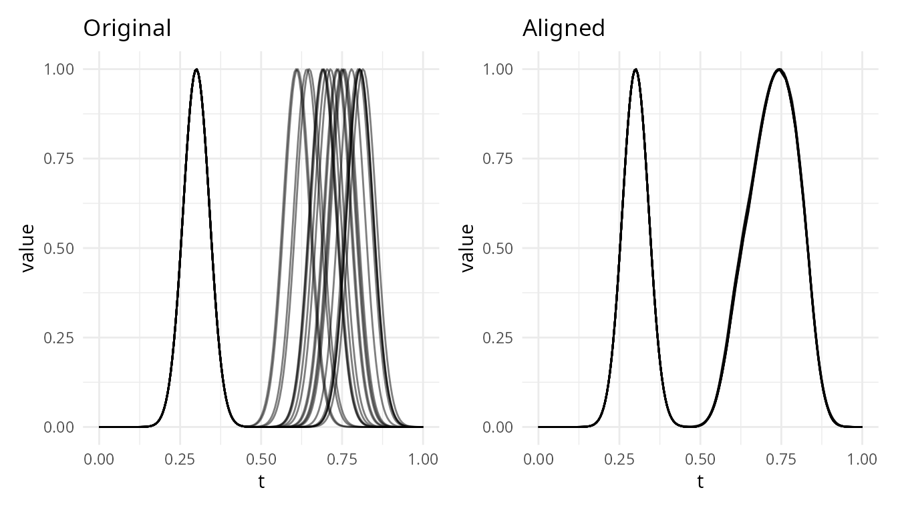
plot(res_w, type = "both")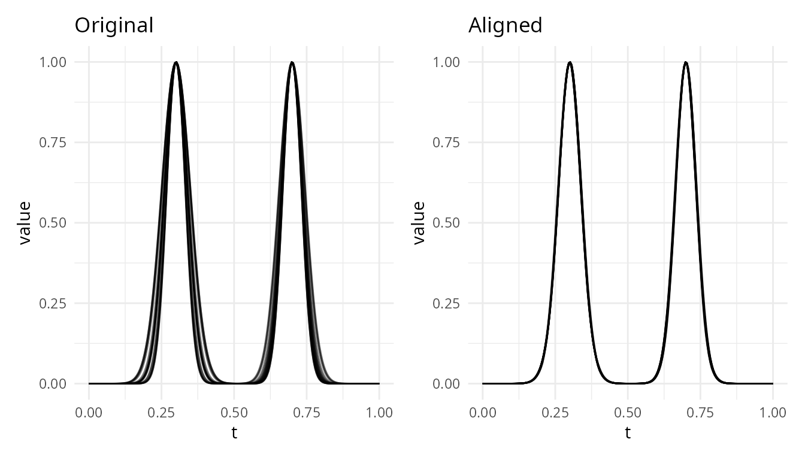
Both cases achieve near-perfect alignment. The warping function locally stretches/compresses the region around each bump to bring peaks into correspondence.
Scaling to More Bumps
As the number of bumps increases, alignment becomes progressively harder. A monotone warping function that stretches one region must compress another, so with many tightly packed bumps the degrees of freedom become insufficient to independently correct each peak.
set.seed(42)
results <- data.frame(
bumps = integer(), scenario = character(), VR = numeric(),
stringsAsFactors = FALSE
)
for (nb in c(2, 4, 5, 7)) {
positions_base <- seq(0.1, 0.9, length.out = nb)
# Varying positions
data_pos <- matrix(0, n, m)
for (i in 1:n) {
for (j in 1:nb) {
p <- positions_base[j] + runif(1, -0.04, 0.04)
data_pos[i, ] <- data_pos[i, ] + exp(-300 * (argvals_mb - p)^2)
}
}
fd_pos <- fdata(data_pos, argvals = argvals_mb)
res_pos <- elastic.align(fd_pos)
vr_pos <- 1 - mean(apply(res_pos$aligned$data, 2, var)) /
mean(apply(fd_pos$data, 2, var))
# Varying widths
data_w <- matrix(0, n, m)
for (i in 1:n) {
for (j in 1:nb) {
w <- runif(1, 200, 600)
data_w[i, ] <- data_w[i, ] + exp(-w * (argvals_mb - positions_base[j])^2)
}
}
fd_w <- fdata(data_w, argvals = argvals_mb)
res_w <- elastic.align(fd_w)
vr_w <- 1 - mean(apply(res_w$aligned$data, 2, var)) /
mean(apply(fd_w$data, 2, var))
# Both varying
data_both <- matrix(0, n, m)
for (i in 1:n) {
for (j in 1:nb) {
p <- positions_base[j] + runif(1, -0.04, 0.04)
w <- runif(1, 200, 600)
data_both[i, ] <- data_both[i, ] + exp(-w * (argvals_mb - p)^2)
}
}
fd_both <- fdata(data_both, argvals = argvals_mb)
res_both <- elastic.align(fd_both)
vr_both <- 1 - mean(apply(res_both$aligned$data, 2, var)) /
mean(apply(fd_both$data, 2, var))
results <- rbind(results, data.frame(
bumps = rep(nb, 3),
scenario = c("Position", "Width", "Both"),
VR = c(vr_pos, vr_w, vr_both) * 100
))
}
# Display as a table
df_wide <- reshape(results, idvar = "bumps", timevar = "scenario",
direction = "wide")
names(df_wide) <- gsub("VR\\.", "", names(df_wide))
for (col in c("Position", "Width", "Both")) {
df_wide[[col]] <- paste0(round(df_wide[[col]], 1), "%")
}
knitr::kable(df_wide, col.names = c("Bumps", "Varying Position",
"Varying Width", "Both Varying"),
align = "cccc",
caption = "Variance reduction by number of bumps and variability type")| Bumps | Varying Position | Varying Width | Both Varying | |
|---|---|---|---|---|
| 1 | 2 | 96.1% | 93% | 96.9% |
| 4 | 4 | 97.9% | 94.9% | 97.4% |
| 7 | 5 | 86.9% | 83.7% | 91.5% |
| 10 | 7 | 63.5% | 23.9% | 61.1% |
Visual Comparison: 4 vs 7 Bumps
set.seed(42)
# 4 bumps — both varying
pos4 <- seq(0.1, 0.9, length.out = 4)
data4 <- matrix(0, n, m)
for (i in 1:n) {
for (j in 1:4) {
p <- pos4[j] + runif(1, -0.04, 0.04)
w <- runif(1, 200, 600)
data4[i, ] <- data4[i, ] + exp(-w * (argvals_mb - p)^2)
}
}
fd4 <- fdata(data4, argvals = argvals_mb)
res4 <- elastic.align(fd4)
vr4 <- 1 - mean(apply(res4$aligned$data, 2, var)) /
mean(apply(fd4$data, 2, var))
# 7 bumps — both varying
pos7 <- seq(0.1, 0.9, length.out = 7)
data7 <- matrix(0, n, m)
for (i in 1:n) {
for (j in 1:7) {
p <- pos7[j] + runif(1, -0.04, 0.04)
w <- runif(1, 200, 600)
data7[i, ] <- data7[i, ] + exp(-w * (argvals_mb - p)^2)
}
}
fd7 <- fdata(data7, argvals = argvals_mb)
res7 <- elastic.align(fd7)
vr7 <- 1 - mean(apply(res7$aligned$data, 2, var)) /
mean(apply(fd7$data, 2, var))
cat("4 bumps (both varying) — VR =", round(vr4 * 100, 1), "%\n")
#> 4 bumps (both varying) — VR = 98.9 %
cat("7 bumps (both varying) — VR =", round(vr7 * 100, 1), "%\n")
#> 7 bumps (both varying) — VR = 62.1 %
plot(res4, type = "both")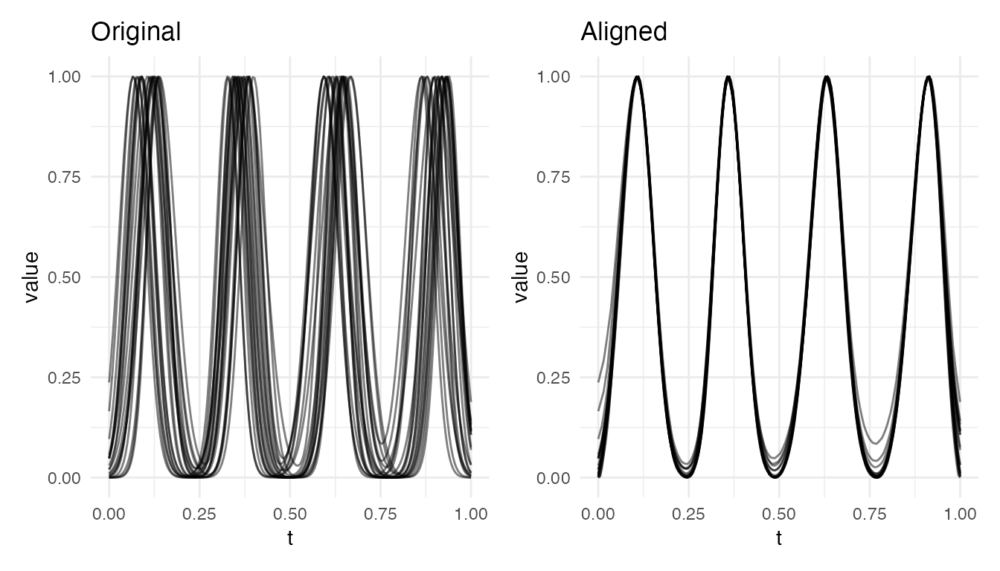
plot(res7, type = "both")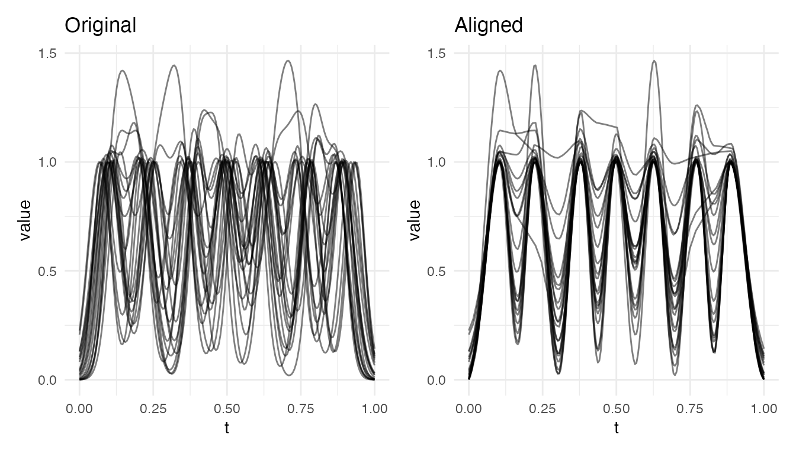
With 4 bumps, alignment still captures most of the variability. With 7 tightly packed bumps, the monotonicity constraint on the warping function limits independent correction of each peak – stretching one inter-peak region forces compression elsewhere. This is a fundamental limitation of elastic alignment, not a numerical issue: a single monotone time-warping cannot independently retime many closely spaced features.
Comparison with DTW and Shift Registration
Three alignment strategies are available in fdars:
| Elastic (SRSF) | DTW | Shift Registration | |
|---|---|---|---|
| Function | elastic.align() |
metric.DTW() |
register.fd() |
| Warping | Smooth, monotone diffeomorphism | Piecewise constant, allows repeated indices | Global translation only |
| Metric | Proper metric (triangle inequality holds) | Not a metric | Not applicable (no warping) |
| Amplitude/Phase | Cleanly separates the two | Mixes them — can absorb amplitude differences into warping | Pure phase (shift), amplitude untouched |
| Degeneracy | No “pinching” — SRSF penalizes compression | Can collapse entire regions to a single point | No degeneracy, but very limited |
| Mean | Karcher mean is well-defined | No principled mean | Shift-corrected cross-sectional mean |
| Complexity | per pair (DP) | per pair (DP) | per curve (cross-correlation) |
Why Elastic Alignment Avoids Degeneracy
A key advantage of the SRSF framework is that the elastic distance penalizes “pinching” — collapsing a region of the curve to a single point. The SRSF of a warped function is , so when (extreme compression), the SRSF contribution vanishes rather than concentrating. This acts as a natural regularizer. In contrast, DTW allows repeated indices that effectively collapse entire regions to a single point, which can produce degenerate alignments.
Head-to-Head: Shifted Bumps
The clearest way to see the differences is on data with localized features:
set.seed(42)
m_cmp <- 200
argvals_cmp <- seq(0, 1, length.out = m_cmp)
n_cmp <- 15
# Two bumps with varying positions
data_cmp <- matrix(0, n_cmp, m_cmp)
for (i in 1:n_cmp) {
p1 <- 0.3 + runif(1, -0.06, 0.06)
p2 <- 0.7 + runif(1, -0.06, 0.06)
data_cmp[i, ] <- exp(-300 * (argvals_cmp - p1)^2) +
exp(-300 * (argvals_cmp - p2)^2)
}
fd_cmp <- fdata(data_cmp, argvals = argvals_cmp)
var_orig_cmp <- mean(apply(fd_cmp$data, 2, var))Elastic alignment finds smooth, local warping for each bump independently:
res_elastic <- elastic.align(fd_cmp)
vr_elastic <- 1 - mean(apply(res_elastic$aligned$data, 2, var)) / var_orig_cmp
cat("Elastic VR:", round(vr_elastic * 100, 1), "%\n")
#> Elastic VR: 100 %Shift registration applies a single global shift – it can center one bump but not both when they move independently:
res_shift <- register.fd(fd_cmp)
vr_shift <- 1 - mean(apply(res_shift$registered$data, 2, var)) / var_orig_cmp
cat("Shift registration VR:", round(vr_shift * 100, 1), "%\n")
#> Shift registration VR: -55.1 %
plot_curves <- function(data, argvals, title) {
n <- nrow(data)
m <- length(argvals)
df <- data.frame(
curve_id = rep(seq_len(n), each = m),
argval = rep(argvals, n),
value = as.vector(t(data))
)
ggplot(df, aes(x = argval, y = value, group = curve_id)) +
geom_line(alpha = 0.5) +
labs(title = title, x = "t", y = "value") +
theme_minimal()
}
p1 <- plot_curves(fd_cmp$data, argvals_cmp, "Original")
p2 <- plot_curves(res_elastic$aligned$data, argvals_cmp,
paste0("Elastic (VR = ", round(vr_elastic * 100, 1), "%)"))
p3 <- plot_curves(res_shift$registered$data, argvals_cmp,
paste0("Shift Registration (VR = ", round(vr_shift * 100, 1), "%)"))
p1 / p2 / p3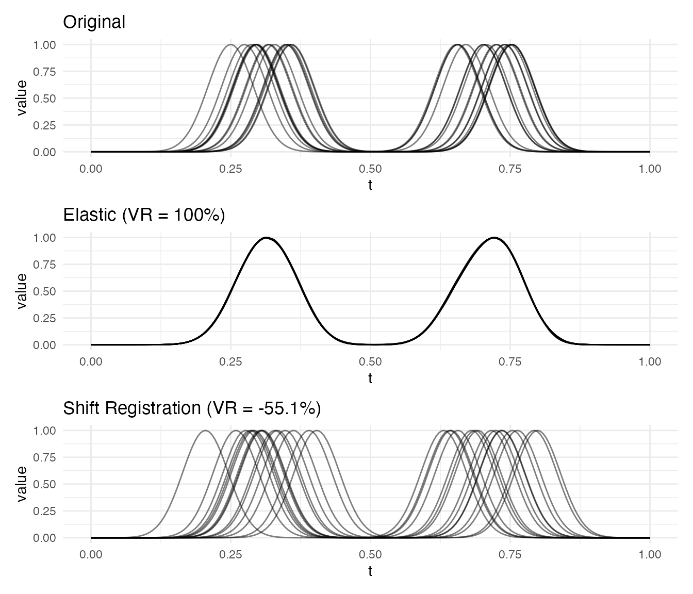
Elastic alignment resolves the independent shifts of both bumps. Shift registration can only correct a single global offset, leaving residual phase variability when features move independently.
DTW Distance vs Elastic Distance
DTW and elastic distances rank curves differently because DTW can absorb amplitude differences into warping while elastic alignment separates them:
# Compute both distance matrices
D_elastic <- elastic.distance(fd_cmp)
D_dtw <- metric.DTW(fd_cmp)
# Compare: correlation of off-diagonal entries
idx <- upper.tri(D_elastic)
cat("Correlation between elastic and DTW distances:",
round(cor(D_elastic[idx], D_dtw[idx]), 3), "\n")
#> Correlation between elastic and DTW distances: 0.899
plot(D_elastic[idx], D_dtw[idx], pch = 19, cex = 0.6, col = "steelblue",
xlab = "Elastic distance", ylab = "DTW distance",
main = "Elastic vs DTW Pairwise Distances")
abline(lm(D_dtw[idx] ~ D_elastic[idx]), col = "red", lwd = 1.5)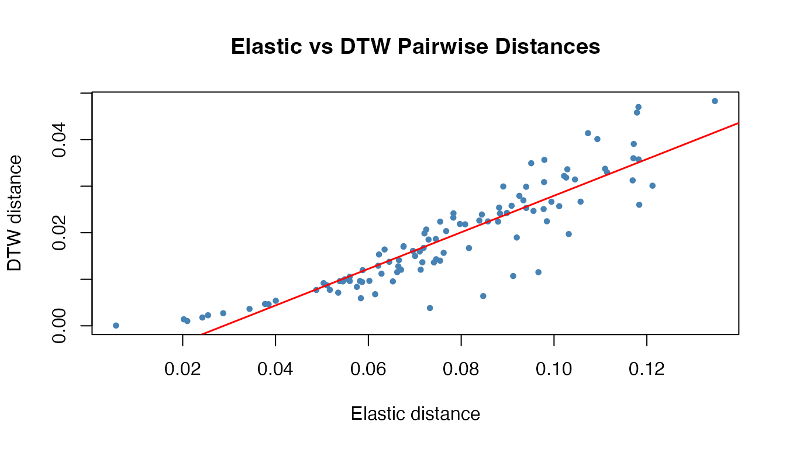
The distances are correlated but not identical. The key difference emerges when amplitude variability is present:
set.seed(42)
# Curves with BOTH amplitude and phase variability
data_amp <- matrix(0, n_cmp, m_cmp)
for (i in 1:n_cmp) {
amp <- runif(1, 0.5, 1.5)
shift <- runif(1, -0.06, 0.06)
data_amp[i, ] <- amp * exp(-200 * (argvals_cmp - 0.5 - shift)^2)
}
fd_amp <- fdata(data_amp, argvals = argvals_cmp)
D_elastic_amp <- elastic.distance(fd_amp)
D_dtw_amp <- metric.DTW(fd_amp)
idx_amp <- upper.tri(D_elastic_amp)
cat("Correlation (amplitude+phase):",
round(cor(D_elastic_amp[idx_amp], D_dtw_amp[idx_amp]), 3), "\n")
#> Correlation (amplitude+phase): 0.929With mixed amplitude and phase, DTW distances are less correlated with elastic distances because DTW warping partially absorbs amplitude differences. Elastic distances preserve the amplitude/phase separation, making them more suitable for downstream analysis (clustering, MDS) when both sources of variability carry distinct meaning.
When to Use Each Method
| Scenario | Recommended |
|---|---|
| Localized features with independent timing shifts | Elastic alignment |
| Simple global time shift or delay | Shift registration (register.fd) — fast
and sufficient |
| Distance computation for clustering/MDS | Elastic distance (proper metric) or DTW (if metric property not needed) |
| Noisy signals, speech-like data | DTW (more robust to noise without pre-smoothing) |
| Periodic/circular data | elastic.align(periodic = TRUE) |
| Need principled mean shape |
karcher.mean() (no DTW equivalent) |
Periodic Functional Data
The Problem
Elastic alignment uses fixed boundary constraints , . This prevents the warping function from performing circular shifts, which means periodic data (e.g., curves on where ) with large phase offsets cannot be properly aligned.
For example, two copies of shifted by half a period have identical shape but the boundary constraints force alignment to fail:
set.seed(42)
m <- 100
argvals_p <- seq(0, 2 * pi, length.out = m)
n <- 15
data_p <- matrix(0, n, m)
for (i in 1:n) {
shift <- sample(0:(m - 1), 1)
idx <- ((seq_len(m) - 1L + shift) %% m) + 1L
data_p[i, ] <- sin(argvals_p[idx])
}
fd_p <- fdata(data_p, argvals = argvals_p)
# Standard alignment struggles with circular shifts
res_std <- elastic.align(fd_p)
var_orig <- mean(apply(fd_p$data, 2, var))
vr_std <- 1 - mean(apply(res_std$aligned$data, 2, var)) / var_orig
cat("Standard alignment on periodic data — VR:", round(vr_std * 100, 1), "%\n")
#> Standard alignment on periodic data — VR: 66.6 %
plot(res_std, type = "both")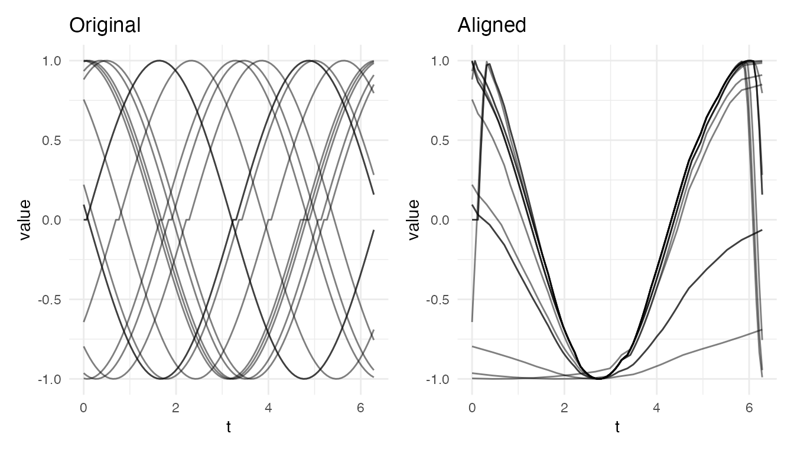
The Solution
Setting periodic = TRUE applies a two-stage
approach:
- Circular rotation: Each curve is circularly shifted so that its global maximum is at a canonical grid position
- Elastic alignment: Standard alignment on the rotated data
res_per <- elastic.align(fd_p, periodic = TRUE)
vr_per <- 1 - mean(apply(res_per$aligned$data, 2, var)) / var_orig
cat("Periodic alignment — VR:", round(vr_per * 100, 1), "%\n")
#> Periodic alignment — VR: 100 %
plot(res_per, type = "both")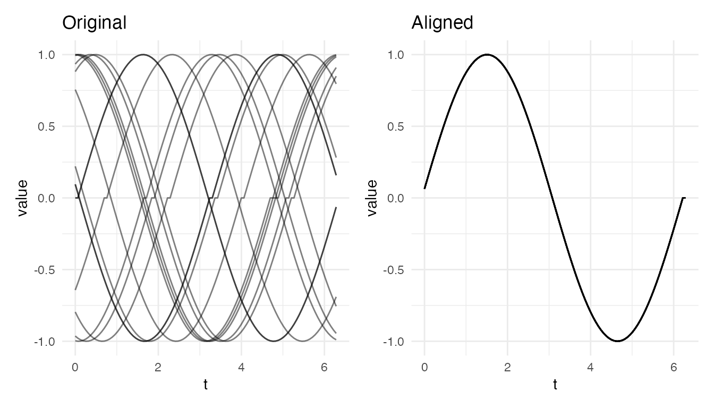
The rotation step removes large circular shifts that the boundary-constrained warping cannot handle, and the elastic step corrects any remaining timing differences.
You can also apply the rotation step manually using
periodic.rotate():
rot <- periodic.rotate(fd_p)
cat("Shifts applied:", head(rot$shifts), "...\n")
#> Shifts applied: 53 37 -23 28 2 -16 ...The karcher.mean() function also accepts
periodic = TRUE:
km_per <- karcher.mean(fd_p, max.iter = 15, periodic = TRUE)
print(km_per)
#> Karcher Mean (Elastic)
#> Curves: 15 x 100 grid points
#> Iterations: 2
#> Converged: TRUE
#> Periodic: TRUEReal Data: Berkeley Growth Velocity
The Berkeley Growth Study recorded the heights of 93 children (39 boys, 54 girls) from ages 1 to 18. The growth velocity curves (cm/year) exhibit clear phase variability: each child’s pubertal growth spurt occurs at a different age, creating horizontal shifts in the peak.
This dataset is a standard benchmark in elastic FDA literature
(Tucker et al., 2013; Srivastava and Klassen, 2016). It is available in
the fdasrvf package.
data(growth_vel, package = "fdasrvf")
# growth_vel$f is 69 (grid) x 93 (curves) — transpose for fdata
fd_growth_raw <- fdata(t(growth_vel$f), argvals = growth_vel$time)
cat("Curves:", nrow(fd_growth_raw$data), "\n")
#> Curves: 93
cat("Grid points:", ncol(fd_growth_raw$data), "\n")
#> Grid points: 69
cat("Age range:", range(fd_growth_raw$argvals), "\n")
#> Age range: 1 18The raw data has only 69 grid points, which is coarse for elastic alignment (the DP warping resolution is limited). We smooth with P-splines and evaluate on a finer grid:
# Smooth with P-splines and evaluate on a finer grid
fine_argvals <- seq(min(fd_growth_raw$argvals), max(fd_growth_raw$argvals),
length.out = 200)
coefs_growth <- fdata2basis(fd_growth_raw, nbasis = 25, type = "bspline")
fd_growth <- basis2fdata(coefs_growth, fine_argvals)
cat("Smoothed grid points:", ncol(fd_growth$data), "\n")
#> Smoothed grid points: 200Full Age Range
plot(fd_growth) + labs(title = "Berkeley Growth Velocity (all 93 children)",
x = "Age (years)", y = "Growth velocity (cm/year)")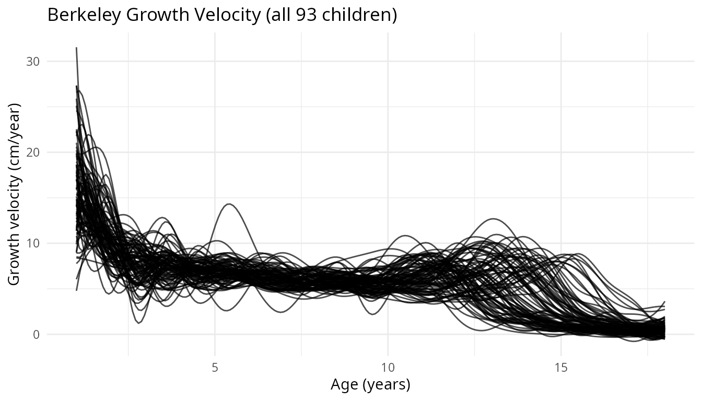
The dominant feature at age 1 (infant growth) and the pubertal spurt around ages 11–14 are both visible, but the pubertal peak is blurred by phase variability.
res_growth <- elastic.align(fd_growth)
var_orig_growth <- mean(apply(fd_growth$data, 2, var))
vr_growth <- 1 - mean(apply(res_growth$aligned$data, 2, var)) / var_orig_growth
cat("Full range VR:", round(vr_growth * 100, 1), "%\n")
#> Full range VR: 48.6 %
plot(res_growth, type = "both")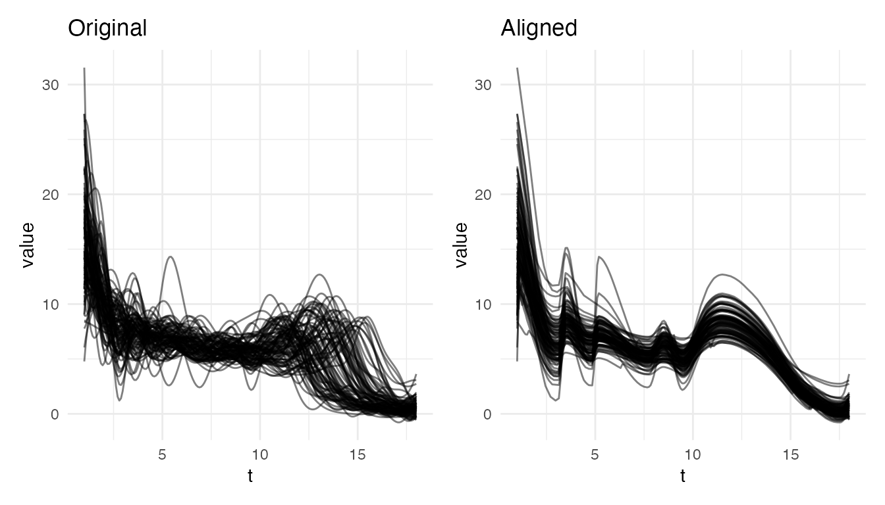
Pubertal Growth Spurt (Ages 8–18)
The pubertal region is where phase variability is strongest. Restricting to ages 8–18 isolates the growth spurt:
idx_pub <- which(fd_growth$argvals >= 8)
fd_pub <- fdata(fd_growth$data[, idx_pub],
argvals = fd_growth$argvals[idx_pub])
res_pub <- elastic.align(fd_pub)
var_pub <- mean(apply(fd_pub$data, 2, var))
vr_pub <- 1 - mean(apply(res_pub$aligned$data, 2, var)) / var_pub
cat("Pubertal region VR:", round(vr_pub * 100, 1), "%\n")
#> Pubertal region VR: 77.7 %
plot(res_pub, type = "both")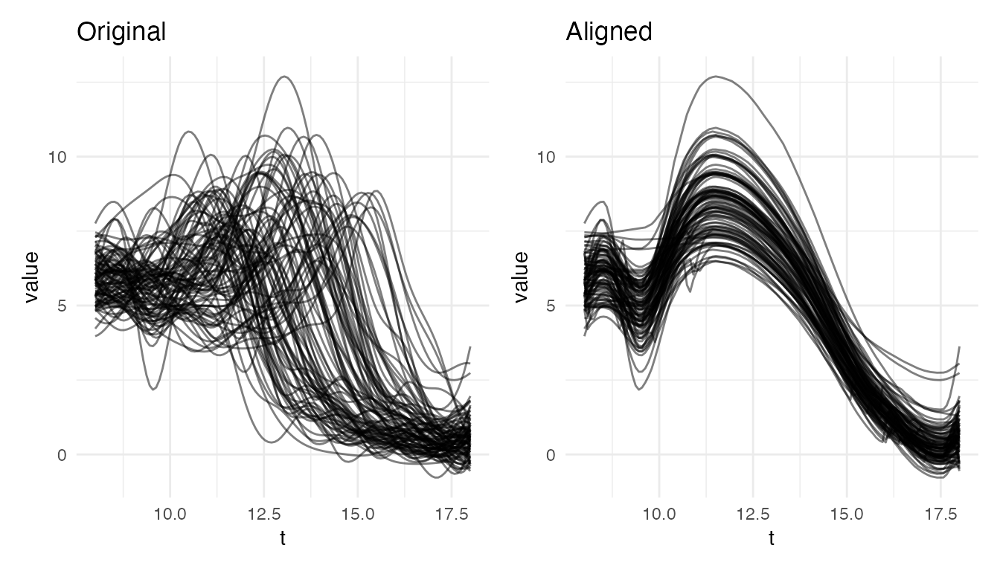
Cross-Sectional Mean vs Karcher Mean
The cross-sectional mean is attenuated because children’s growth spurts are averaged at mismatched ages. The Karcher mean recovers the true peak amplitude:
km_pub <- karcher.mean(fd_pub, max.iter = 20)
cross_mean_pub <- colMeans(fd_pub$data)
karcher_pub <- as.numeric(km_pub$mean$data)
cat("Cross-sectional mean peak:", round(max(cross_mean_pub), 2), "cm/yr at age",
round(fd_pub$argvals[which.max(cross_mean_pub)], 1), "\n")
#> Cross-sectional mean peak: 6.39 cm/yr at age 11.5
cat("Karcher mean peak: ", round(max(karcher_pub), 2), "cm/yr at age",
round(fd_pub$argvals[which.max(karcher_pub)], 1), "\n")
#> Karcher mean peak: 8.43 cm/yr at age 12.4
df_means <- data.frame(
age = rep(fd_pub$argvals, 2),
velocity = c(cross_mean_pub, karcher_pub),
type = rep(c("Cross-sectional mean", "Karcher mean"),
each = length(fd_pub$argvals))
)
ggplot(df_means, aes(x = age, y = velocity, color = type)) +
geom_line(linewidth = 1.2) +
scale_color_manual(values = c("Cross-sectional mean" = "steelblue",
"Karcher mean" = "firebrick")) +
labs(title = "Pubertal Growth Spurt: Cross-Sectional vs Karcher Mean",
x = "Age (years)", y = "Growth velocity (cm/year)", color = NULL)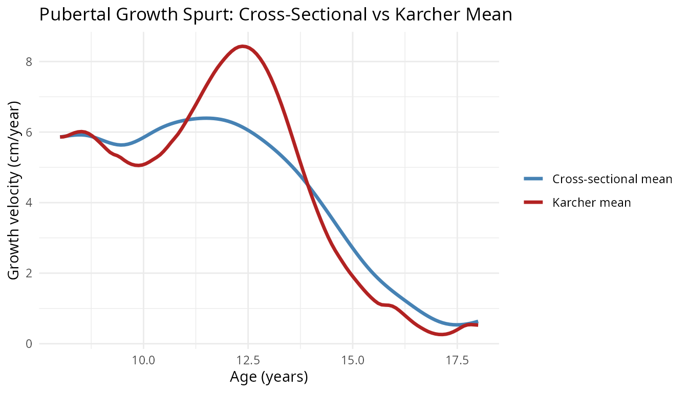
The Karcher mean is sharper and taller because it aligns the growth spurts before averaging, rather than smearing them across different ages.
FPCA Before and After Alignment
Alignment concentrates variance into fewer principal components:
pc_before <- fdata2pc(fd_pub, ncomp = 3)
pc_after <- fdata2pc(km_pub$aligned, ncomp = 3)
pve_before <- round(pc_before$d^2 / sum(pc_before$d^2) * 100, 1)
pve_after <- round(pc_after$d^2 / sum(pc_after$d^2) * 100, 1)
cat("Before alignment: PC1 =", pve_before[1], "%, PC2 =", pve_before[2],
"%, PC3 =", pve_before[3], "%\n")
#> Before alignment: PC1 = 67.6 %, PC2 = 26.3 %, PC3 = 6.1 %
cat("After alignment: PC1 =", pve_after[1], "%, PC2 =", pve_after[2],
"%, PC3 =", pve_after[3], "%\n")
#> After alignment: PC1 = 58 %, PC2 = 31.5 %, PC3 = 10.5 %Before alignment, phase variability spreads across multiple PCs. After alignment, the remaining (amplitude) variability is more efficiently captured by the first PC.
Warping Functions Reveal Growth Timing
The estimated warping functions show how each child’s biological clock differs from the average:
plot(res_pub, type = "warps")
Curves above the diagonal correspond to children whose growth spurt occurred earlier than average (biological clock runs ahead); curves below the diagonal indicate later-maturing children.
Practical Tips
Pre-smooth Noisy Data
The SRSF transform involves derivatives, so noise gets amplified. Always smooth noisy data before alignment:
set.seed(42)
noisy <- matrix(0, 15, 100)
shifts <- runif(15, -0.1, 0.1)
for (i in 1:15) {
noisy[i, ] <- sin(2 * pi * (argvals - shifts[i])) + rnorm(100, sd = 0.15)
}
fd_noisy <- fdata(noisy, argvals = argvals)
# Smooth with B-spline basis
coefs <- fdata2basis(fd_noisy, nbasis = 15, type = "bspline")
fd_smooth <- basis2fdata(coefs, argvals)
var_before <- mean(apply(fd_noisy$data, 2, var))
# Align raw vs smoothed
res_raw <- elastic.align(fd_noisy)
res_smooth <- elastic.align(fd_smooth)
vr_raw <- 1 - mean(apply(res_raw$aligned$data, 2, var)) / var_before
vr_smooth <- 1 - mean(apply(res_smooth$aligned$data, 2, var)) / var_before
cat("VR (raw): ", round(vr_raw * 100, 1), "%\n")
#> VR (raw): 47.5 %
cat("VR (smoothed):", round(vr_smooth * 100, 1), "%\n")
#> VR (smoothed): 81.7 %Use Sufficient Grid Resolution
The dynamic programming alignment operates on the evaluation grid. Finer grids yield more accurate warping:
set.seed(42)
for (m in c(20, 50, 100, 200)) {
av <- seq(0, 1, length.out = m)
shifts <- runif(15, -0.1, 0.1)
dm <- matrix(0, 15, m)
for (i in 1:15) dm[i, ] <- sin(2 * pi * (av - shifts[i]))
fd_m <- fdata(dm, argvals = av)
ea <- elastic.align(fd_m)
var_red <- 1 - mean(apply(ea$aligned$data, 2, var)) /
mean(apply(fd_m$data, 2, var))
cat(sprintf(" m = %3d: VR = %5.1f%%\n", m, var_red * 100))
}
#> m = 20: VR = 62.7%
#> m = 50: VR = 73.9%
#> m = 100: VR = 76.4%
#> m = 200: VR = 77.2%A minimum of 50-100 grid points is recommended.
Choose an Appropriate Target
The target curve affects alignment quality. Three options:
| Target | When to use |
|---|---|
| Cross-sectional mean (default) | General-purpose; robust with many curves |
| Deepest curve | When outliers may distort the mean |
| Known reference | When aligning to a standard template |
set.seed(42)
shifts <- runif(15, -0.1, 0.1)
dm <- matrix(0, 15, 100)
for (i in 1:15) dm[i, ] <- sin(2 * pi * (argvals - shifts[i]))
fd <- fdata(dm, argvals = argvals)
var_before <- mean(apply(fd$data, 2, var))
# Default (cross-sectional mean)
vr1 <- 1 - mean(apply(elastic.align(fd)$aligned$data, 2, var)) / var_before
# Deepest curve
depths <- depth(fd, method = "FM")
vr2 <- 1 - mean(apply(elastic.align(fd, target = fd[which.max(depths)])$aligned$data, 2, var)) / var_before
cat("Cross-sectional mean: VR =", round(vr1 * 100, 1), "%\n")
#> Cross-sectional mean: VR = 75.9 %
cat("Deepest curve: VR =", round(vr2 * 100, 1), "%\n")
#> Deepest curve: VR = 75.7 %Alignment + FPCA
Alignment before FPCA concentrates variance into the first principal component by removing phase variability that would otherwise spread across components:
set.seed(42)
shifts <- runif(15, -0.1, 0.1)
dm <- matrix(0, 15, 100)
for (i in 1:15) dm[i, ] <- sin(2 * pi * (argvals - shifts[i]))
fd <- fdata(dm, argvals = argvals)
# FPCA before and after alignment
pc_before <- fdata2pc(fd, ncomp = 3)
ea <- elastic.align(fd)
pc_after <- fdata2pc(ea$aligned, ncomp = 3)
pve_before <- round(pc_before$d^2 / sum(pc_before$d^2) * 100, 1)
pve_after <- round(pc_after$d^2 / sum(pc_after$d^2) * 100, 1)
cat("Before alignment: PC1 =", pve_before[1], "%, PC2 =", pve_before[2], "%\n")
#> Before alignment: PC1 = 97.8 %, PC2 = 2.2 %
cat("After alignment: PC1 =", pve_after[1], "%, PC2 =", pve_after[2], "%\n")
#> After alignment: PC1 = 99.1 %, PC2 = 0.7 %Limitations
Fixed Boundary Conditions
Warping functions are constrained to and . This means the alignment cannot correct mismatches at the domain boundaries. For shifted curves, the residual at the boundary equals the value difference:
f1 <- sin(2 * pi * argvals)
f2 <- sin(2 * pi * (argvals - 0.1))
fd2 <- fdata(rbind(f1, f2), argvals = argvals)
ea <- elastic.align(fd2)
# Boundary residual = |sin(0) - sin(-0.2*pi)| = 0.588
cat("Boundary gap: ", round(abs(f2[1] - f1[1]), 3), "\n")
#> Boundary gap: 0.588
cat("Max aligned difference:", round(max(abs(ea$aligned$data[1, ] - ea$aligned$data[2, ])), 3), "\n")
#> Max aligned difference: 0.588
cat("Interior max diff: ", round(max(abs(ea$aligned$data[1, 10:90] - ea$aligned$data[2, 10:90])), 3), "\n")
#> Interior max diff: 0.339The interior alignment is excellent even when boundaries cannot be corrected.
Amplitude-Only Differences
When curves differ only in amplitude (e.g., vs ), alignment correctly produces identity warping – no spurious time distortion:
f1 <- sin(2 * pi * argvals)
f2 <- 2 * sin(2 * pi * argvals)
fd_amp <- fdata(rbind(f1, f2), argvals = argvals)
res_amp <- elastic.align(fd_amp)
max_warp_dev <- max(abs(res_amp$gammas$data -
matrix(argvals, 2, 100, byrow = TRUE)))
cat("Max warp deviation from identity:", max_warp_dev, "\n")
#> Max warp deviation from identity: 0This is the correct behavior: amplitude differences should not produce warping. However, when both amplitude and phase variability are present, the phase correction may be partial – alignment focuses on phase and leaves amplitude untouched.
Domain Independence
The alignment works correctly on any domain, not just :
for (domain in list(c(0, 1), c(0, 2*pi), c(0, 10), c(-1, 1))) {
av <- seq(domain[1], domain[2], length.out = 100)
range <- domain[2] - domain[1]
dm <- matrix(0, 10, 100)
set.seed(42)
for (i in 1:10) {
shift <- runif(1, -0.1 * range, 0.1 * range)
dm[i, ] <- sin(2 * pi * (av - shift) / range)
}
fd <- fdata(dm, argvals = av)
ea <- elastic.align(fd)
var_red <- 1 - mean(apply(ea$aligned$data, 2, var)) /
mean(apply(fd$data, 2, var))
cat(sprintf(" [%g, %g]: VR = %.1f%%\n", domain[1], domain[2], var_red * 100))
}
#> [0, 1]: VR = 76.1%
#> [0, 6.28319]: VR = 76.1%
#> [0, 10]: VR = 76.1%
#> [-1, 1]: VR = 76.1%References
- Srivastava, A., Klassen, E., Joshi, S.H., and Jermyn, I.H. (2011). Shape analysis of elastic curves in Euclidean spaces. IEEE Transactions on Pattern Analysis and Machine Intelligence, 33(7):1415–1428.
- Tucker, J.D., Wu, W., and Srivastava, A. (2013). Generative models for functional data using phase and amplitude separation. Computational Statistics & Data Analysis, 61:50–66.
- Srivastava, A. and Klassen, E. (2016). Functional and Shape Data Analysis. Springer.